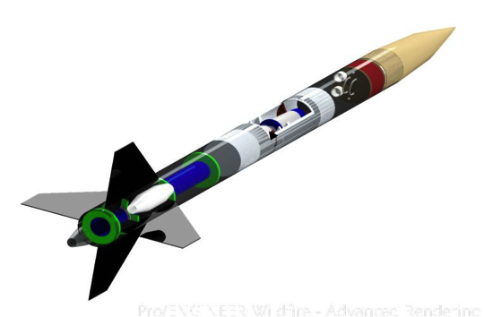
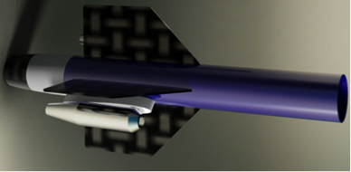
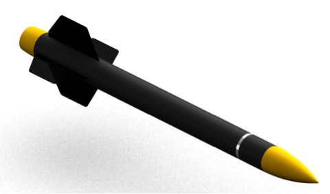
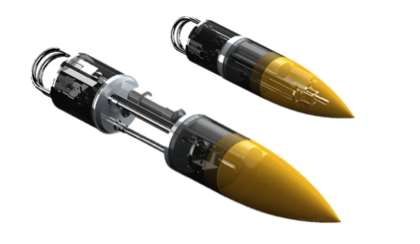
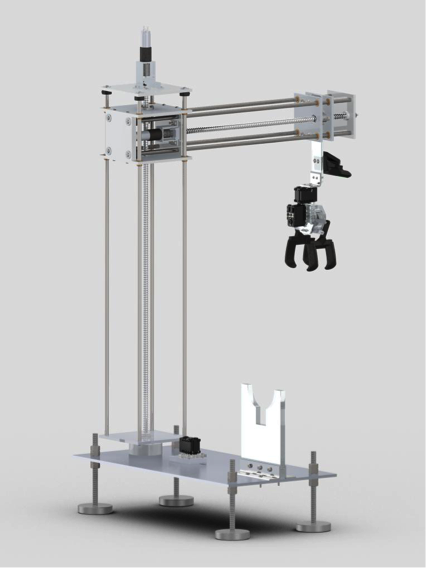

Our Work
2016 Student Launch Initiative
Rocket Design
Structural integrity of our rocket body is of upmost importance. That's why we built it entirely out of carbon fiber.
Payload
Structural health monitoring is the future of aerospace, and the present for our team.
Outreach
We do more than aerospace R&D. We give back to the middle Tenneessee community with STEM based educational engagement events.
Safety
Our program stresses safety. Standard Operating Procedures govern our work.
Past Projects
2012 University Student Launch Initiative:
Rocket-Flight-based Performance Study of a Scaled Subsonic Ramjet Engine
The objective of the Vanderbilt USLI-12 team was to prove that inexpensive rocket flight can serve as an experimental platform for testing the design and performance of an air-breathing ramjet engine. In the USLI flight window, where the rocket achieves high speeds (>140 m/s, Mach = 0.4), sufficient flow compression can be achieved in the engine diffuser, whereby, fuel energy can be added to it to generate thrust by expansion through a converging nozzle. In-flight engine ignition is achieved through a ‘rocket motor igniter’ that is set-off at the right delay, combusting the fine atomized fuel spray. Spray atomization and injection is sustained through a pressurized kerosene injection system. The working pressure for kerosene injection is generated through a liquid nitrogen tank, whose vent valve has been suitably modified. At the right delay, the solenoid valve on the exit side of the cryogen tank opens, and pressurizes the main fuel tank, and the fuel is injected into the ramjet engine. Fuel delivery from the tank is started a short duration prior to the igniter burn, so as to negotiate the long delivery line.
A pair of hand-made ramjet engines is externally mounted to the aft-most section of the rocket. They are identical except that one of the engines is not ignited. The active ramjet will experience timely and sustained combustion of atomized kerosene fuel, which will add energy to the air flowing through it. This hot air is forced to expand through a nozzle in which it accelerates and produces thrust. It is important to note that for this experiment, the ramjet will produce no net thrust, meaning that its drag will more than negate any thrust that is produced, and the ramjet will not accelerate the rocket beyond the means of the primary L1115 motor. The ramjet is instrumented with strain and temperature sensors to measure thrust and analyze its performance.
2013 University Student Launch Initiative:
Rocket-Flight-based Performance Study of a Biofueled Subsonic Ramjet Engine
The objective of the Vanderbilt USLI Payload was six fold: (i) to prove that inexpensive rocket flight can serve as a test bed for the performance evaluation of air-breathing engines running on biohybrid fuels, (ii) to use comprehensive computational fluid dynamics approaches to design a ramjet engine, (iii) to hand fabricate the engine, (iv) to conduct extensive groundbased performance tests to modify and optimize the engine to work on bio-hybrid fuels, (v) to select the right biohybrid fuel blends suitable for jet engine flight, and (vi) raise awareness for the use of bio fuels in the aviation sector, as mankind has to plan for the day when renewable fuels are exhausted.
Ramjet engines are the simplest of the air-breathing engines with no moving parts, which require air compression through high-speed flight for combustion and thrust generation. The engine was first design-simulated using computational fluid dynamical tools prior to actual fabrication and testing of a prototype. We have studied different fuel injection, fuel blending, and flame holder designs and strategies to optimize the engine for flight tests. Flight test is a parametric extension of detailed groundbased tests.
Spray atomization and injection is sustained through a pressurized fuel injection system. The working pressure for fuel injection (60:40 biodiesel: bioethanol) is generated through a liquid nitrogen tank, whose vent valve has been suitably modified. At the right delay, the solenoid valve on the exit side of the cryogen tank opens, and pressurizes the main fuel tank, and the fuel is injected into the ramjet engine. Fuel delivery from the tank is started a short duration prior to the igniter burn, so as to negotiate the long delivery line.
The hand-made ramjet engines are externally mounted to the aft-most section of the rocket. They are identical and both engines are ignited. The ramjets will experience timely and sustained combustion of atomized fuel, which will add energy to the air flowing through it. This hot air is forced to expand through a nozzle in which it accelerates and produces thrust. It is important to note that for this experiment, the ramjet will produce no net thrust, meaning that its drag will more than negate any thrust that is produced, and the ramjet will not accelerate the rocket beyond the means of the primary L1115 motor. The ramjet is instrumented with strain and temperature sensors to measure thrust and analyze its performance.

2014 Student Launch Initiative:
Rocket-Flight-based Performance Study of Liquid Slosh Abatement High Pressure Fuel Delivery System Through Subsonic Reverse-Flow Fuel Injection and Combustion in a Ramjet Engine, and Landing Hazard Detection Through Camjet Payload.
The Vanderbilt Aerospace Club’s rocket, named StarCRAFT, flown at competition had an overall length of 118” with an assembled weight of 47.2 lbs. and an outer body diameter of 5.5”. An off-the-shelf, reloadable Cesaroni L1395-BS was the primary source of propulsion, propelling the rocket to an altitude of 4850 ft. above the Bonneville Salt Flats. The recovery system flown at competition was a hand-sewn dual deployment system comprising of a 12 ft. elliptical main parachute and a 3 ft. elliptical drogue connected to bulkheads via shock chords, a system that was designed and manufactured by the team. The drogue parachute was housed and deployed at apogee from the forward section of the rocket (just aft of the avionics bay) whereas the main parachute was housed and deployed at 700 ft. from the nose cone (just forward of the avionics bay).
Multiple payload experiments were performed during the competition launch. We flew liquid fuel tank slosh abatement and negative-g fuel delivery system which was validated through the performance of a high-pressure opposing fuel-injected subsonic ramjet engine running on biofuels. An aluminum fuel tank designed for safety and equipped with suitable vent valves incorporated slosh abatement measures allowing fuel to continuously be delivered at 450 psi manifold injection pressure to the ramjet for the appropriate amount of time during the flight. Sustained combustion in the active ramjet served as the final validation of the slosh abatement system. The second payload was a modular hazard detection system for landing site evaluation. The second “ramjet” shroud served as housing for this self-contained and fully modular system that contained all the necessary power and electronic components needed to collect images and perform image processing. The ramjet and the camjet pylon attachments to the rocket were instrumented to measure the aerodynamic loads on these external payloads.

The hand-made ramjet engine is externally mounted to the aft-most section of the rocket. The ramjet will experience timely and sustained combustion of atomized fuel upon ignition, which will add energy to the air flowing through it. This hot air is forced to expand through a nozzle in which it accelerates and produces thrust. It is important to note that for this experiment, the ramjet will produce no net thrust, meaning that its drag will more than negate any thrust that is produced, and the ramjet will not accelerate the rocket beyond the means of the primary L1395 motor. The ramjet is instrumented with strain and temperature sensors to measure thrust and analyze its performance.
2015 Student Launch Initiative:
Ground-based Evaluation of Robust Autonomous Ground Support Equipment in Variable Operating Environments.
The Vanderbilt Aerospace Club’s rocket, named Mini-V, had an overall length of 58.4”, with an outer body diameter of 4”, and an assembled weight of 14.55 lbs. An off-the-shelf, reloadable Cesaroni J380 “Smoky Sam” was the chosen motor, propelling the rocket to an altitude of 2929 ft. above Bragg Farms. The recovery system flown at competition was a two-parachute system, with a rocket parachute deployed at apogee and a payload parachute deployed at 1000ft. Both of these 30” elliptical parachutes were connected to their respective sections via 15 ft. shock cords. The rocket parachute was housed and deployed at apogee from the tail and forward section of the rocket (just aft of the avionics bay), whereas, the payload parachute was housed and deployed at 1000 ft. from the forward section (just fore of the avionics bay).
The payload containment mechanism is housed in the nose section of the rocket. The payload bay aims at securely storing the sample payload and then jettisoning via its own payload parachute at 1000 ft. on the way down from apogee. The payload bay design is driven by a lead screw, which acts as the method for linear actuation. By rotating against a lead nut, the motor-driven lead screw is able to securely open and close the payload bay by moving the nose cone in and out. The lead screw itself provides the force needed to secure the payload bay closed during flight—keeping the sample safely locked in place. The lead screw is non-backdrivable, meaning that axial forces, such as those experienced during launch, will not cause it to rotate against the lead nut. The payload bay contains custom aluminum bulkheads for structural support and a custom-molded carbon fiber tray and sabot system for payload retention. The payload bay houses its own electronics bay as well, providing the logic necessary for the payload bay to communicate with the AGSE during sample retrieval via a custom-made magnetic breakaway connector that attaches to the outside of the rocket.
The Autonomous Ground Support Equipment (AGSE) is a ground-based, robotic system that aims at autonomously picking up a sample payload and placing it within the rocket. Vanderbilt’s AGSE includes the additional feature of camera-based vision, an enhancement allowing for a more adaptable, dynamic system. By having computer vision, the AGSE is able to find and retrieve a sample payload from anywhere within its workspace. The camera feed informs the AGSE on where to move next, a technique in robotics called visual servoing. The image seen by the camera is processed by an NVIDIA Jetson TK1 board located on the AGSE table. Filters are applied to the image to sort out non-sample objects. Once the sample—a known geometry and color—is found, a bounding box is drawn around it, allowing the center of mass to be found. It is this center that the AGSE uses to position the gripper over the object. In a similar way, the payload bay’s position and orientation are found using two fiducial markers, similar to QR codes, in the payload tray. With both the sample and payload positions and orientations now known, the AGSE can pick up and place the sample in the payload bay and signal it to close. The AGSE radial and vertical movement is driven by two lead screws—influenced by the design of the payload bay. The AGSE rotates on its table base through use of a servomotor connected to its main shaft. The gripper is a custom design using a few parts from a Crust Crawler off-the-shelf gripper design. Using acrylic gear casing, metal linkages, 3D printed phalanges, and foam padding on the phalanges, the gripper has proven itself to be durable and robust not only in actuating but also in grabbing the sample. The gripper is actuated with a servomotor, as is its wrist movement.
